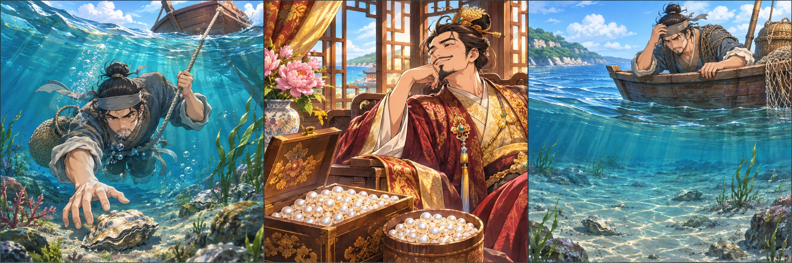
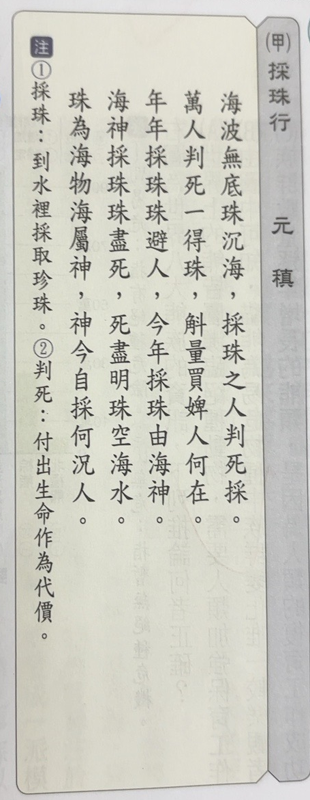
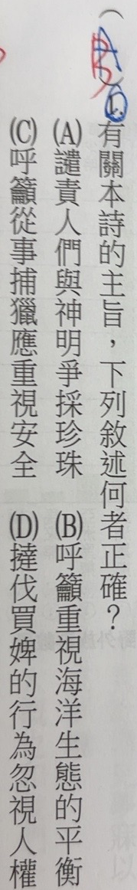
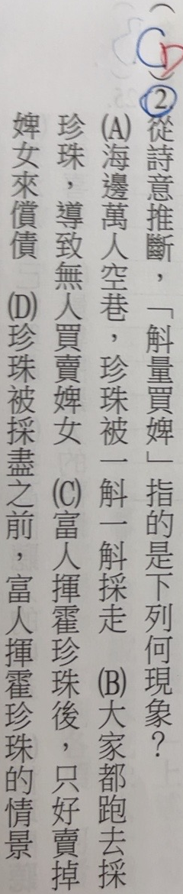

完整原題
作答所需文章／材料
（甲）採珠行 元稹 海波無底珠沉海，採珠之人判死採。 萬人判死一得珠，斛量買婢人何在。 年年採珠珠避人，今年採珠由海神。 海神採珠珠盡死，死盡明珠空海水。 珠為海物海屬神，神今自採何況人。 注：①採珠：到水裡採取珍珠。②判死：付出生命作為代價。國文第1題｜〈採珠行〉的主旨判讀
國文第2題｜「斛量買婢」的文意
先想一想，再查看答案、解說與原圖
國文第1題｜〈採珠行〉的主旨判讀
分享原卷｜第1題 · 首次出題日期 2026-11-04 · 原AI對話 ↗
逐項解析
| 選項與原句 | 判讀 | 句意與判斷理由 |
|---|---|---|
| (A) 譴責人們與神明爭採珍珠 | 不選 | 海神為想像與諷喻，不是單純譴責人與神競爭。 |
| (B) 呼籲重視海洋生態的平衡 | 應選 | 珠盡死、空海水呈現資源被取盡，四項中最能概括本題全詩。 |
| (C) 呼籲從事捕獵應重視安全 | 不選 | 採珠危險是部分內容，不足概括後半的資源耗竭。 |
| (D) 撻伐買婢的行為忽視人權 | 不選 | 買婢是其中材料，不是全詩只談的人權主張。 |
詳細說明與解題步驟
全詩逐句白話
「海波無底珠沉海，採珠之人判死採」：海水深不可測，珍珠沉在海底；採珠的人冒著生命危險去採取。「判死」指拼死、冒死。
「萬人判死一得珠，斛量買婢人何在」：許多人冒死，才可能取得珍珠；那些以大量珍珠購買婢女的人，如今又在哪裡？「斛」是古代容量單位，以斛計珠顯出數量多，不是採珠工具。「萬人」與「一得」形成懸殊對比，不是提供可計算的統計採獲率。
「年年採珠珠避人，今年採珠由海神」：人們年年採珠，珍珠彷彿躲避人類；今年甚至由海神親自採珠。這是詩中的想像、諷喻，不是神明採珠的歷史紀錄。
「海神採珠珠盡死，死盡明珠空海水」：海神一採，珍珠便被取盡；珍珠消失，只剩空蕩的海水。藉誇張想像凸顯過度索取、資源耗竭。
「珠為海物海屬神，神今自採何況人」：珍珠本來是海中產物，海洋又屬海神；如今連海神都自行採取，何況是人類呢？以反問延伸對貪取的反思。
第1題詳解
全詩由冒死採珠寫到「珠盡死」「空海水」，呈現過度索取之下珍珠耗竭的景象。在本題四個選項中，B最能涵蓋詩末對海洋資源及人類行為的反思，依原卷紅筆維持B。
A把想像中的海神當成真有神、人爭奪的事件，偏離諷喻。C只抓住冒死採珠的危險，不能概括後半資源被採盡的內容。D只抓買婢，並非本詩整體論述。
本詩也同情冒死勞動者、反映富貴者奢侈與社會不公；選B不表示古詩只有現代環境保護一種意義。作答須比較四項何者最能涵蓋本題所引全詩，不把單一細節當全文主旨。
原AI作答紀錄更正：原AI曾寫本題藍筆選B且已正確；實看放大原卷，藍筆是A、紅筆訂正B。原題與答案B不變，原作答記錄依原圖更正。
原典核對：[《全唐詩》卷418〈採珠行〉](https://zh.wikisource.org/zh-hant/全唐詩/卷418)。詩文用字依原卷保留。
詩中線索：採珠之人判死採

① 先看開頭：冒死採珠
「判死」是冒著生命危險。開頭寫勞動者取得珍珠的艱辛，也為後文的奢侈消費形成對比。
詩中線索：大量珍珠與奢侈消費
② 接著對比：富人揮霍
「斛量買婢」寫富貴者大量耗用珍珠。這是詩中材料；主旨題仍要連同後半詩一起判斷。
輔助情境：資源被取盡的反思
③ 再讀結尾：珠盡海空
「珠盡死」「空海水」把過度索取推到資源耗竭。四個選項中，B最能涵蓋這條全文線索。海神採珠是諷喻想像。
④ 從採珠艱辛讀到資源耗竭
答案 B：呼籲重視海洋生態的平衡
- 冒死採珠→富人揮霍→珠盡海空，讀完整條脈絡。
- C只談安全，D只抓買婢，均未涵蓋後半詩。
- 本詩也含勞動與奢侈批判，不將意義限成單一現代口號。
核對註記：已實看真正上傳原卷與裁圖，核對完整題幹、全部四選項及共用閱讀；日期為原始提問訊息的台灣日期，未提供實際考試日。未確認對應冊次、章節，歸綜合。
原圖（僅本題）


國文第2題｜「斛量買婢」的文意
分享原卷｜第2題 · 首次出題日期 2026-11-04 · 原AI對話 ↗
逐項解析
| 選項與原句 | 判讀 | 句意與判斷理由 |
|---|---|---|
| (A) 海邊萬人空巷，珍珠被一斛一斛採走 | 不選 | 斛量指以容量計量珍珠，不是詩中描述的採珠方式；萬人空巷亦非原意。 |
| (B) 大家都跑去採珍珠，導致無人買賣婢女 | 不選 | 原詩沒說因採珠而無人買賣婢女。 |
| (C) 富人揮霍珍珠後，只好賣掉婢女來償債 | 不選 | 買與賣方向相反，償債也是原文未有的情節。 |
| (D) 珍珠被採盡之前，富人揮霍珍珠的情景 | 應選 | 符合富貴者以大量珍珠奢侈消費的情景。 |
詳細說明與解題步驟
逐詞判讀
斛是古代容量單位；斛量表示珍珠多到以容量計量。買婢是購買婢女，動作是「買」，不是「賣」。合起來是在說富貴者以大量珍珠購買婢女、奢侈耗費珍珠的情景，因此選D。
C把買婢反過來說成賣婢，還額外加入償債情節，原詩沒有這個因果。A把斛量誤套為一斛一斛採珠，也添入萬人空巷；B把採珠與無人買賣婢女連成原詩未說的因果，均不合。
全詩逐句白話已列在本組第1題解說。此題把「萬人判死」的艱險取得，與「斛量買婢」的富人奢侈並置；把握動詞及前後對比，不因看到珍珠、婢女就拼出未出現的故事。這是對古代詩句的理解，不把買婢當成值得提倡的行為。
容量計量示意；不指定器形或數值
① 斛量：珍珠多到以容量計
「斛」是古代容量單位；「斛量」表現珍珠數量很多。它不是採珠工具，也不能讀成一斛一斛從海裡採走。
歷史文意：大量珍珠用於買婢
② 買婢：用珍珠購買婢女
句中的動詞是「買」。富貴者耗用大量珍珠，是奢侈消費的描寫；D的富人揮霍最符合這個情景。
核對動詞：買；原詩未說償債
③ 對照C：不能反向又加情節
C改成「賣掉婢女來償債」，把買變成賣，還添上原詩未說的債務。讀詞義時先確認動作，再核對前後情節。
④ 抓準「斛量買婢」的量與動作
答案 D：富人揮霍珍珠的情景
- 斛量＝大量計量；買婢＝購買婢女。
- 萬人冒死取得，對比富人奢侈耗用。
- C把買說成賣，又無據加入償債，應排除。
核對註記：已實看真正上傳原卷與裁圖，核對完整題幹、全部四選項及共用閱讀；日期為原始提問訊息的台灣日期，未提供實際考試日。未確認對應冊次、章節，歸綜合。
原圖（僅本題）
